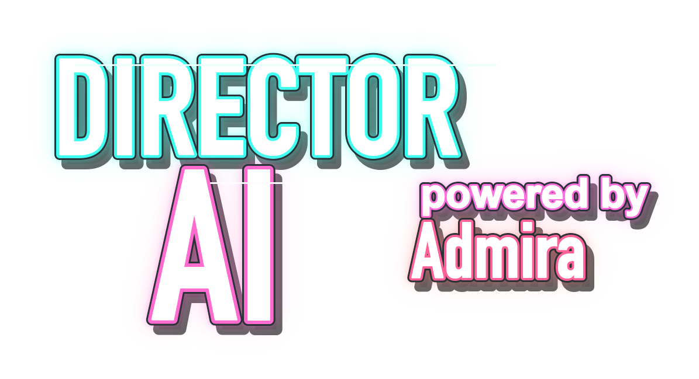

Short films
Scene boards, timing maps, voice passes, continuity notes, and exportable prompts for AI video pipelines.
AInimation Studio
Cast, stage, score, script, image, video, music, and voice in one authoring environment. The classic multimedia metaphor, rebuilt for generative production.

Not another prompt box. A timeline-based authoring tool where generated media becomes editable objects with behavior.
Start in blocks
Formats
AInimation treats every generated piece as production material: a cast member, a staged object, a timed score element, or an inspectable behavior.
Scene boards, timing maps, voice passes, continuity notes, and exportable prompts for AI video pipelines.
Score-led generation where beats, lyrics, camera moves, loops, and visual motifs stay connected.
Reusable characters, product spaces, style references, and behavior rules for repeatable campaign output.
Process
The studio keeps the classic Director metaphor because it gives AI generation a place to land: cast, stage, score, script, then export.
Start with a seed, world, lead cast member, tone, duration, and intended format.
The AI proposes cast, scenes, score rows, media prompts, cues, and behavior notes.
Move objects on stage, import media, adjust timing, filter assets, and inspect every output.
Download briefs, JSON, prompts, timing maps, and stage videos for downstream tools.
Engine
The Director surface is the face. OpenMontage is the production brain underneath — an open-source, agentic video system that turns the AI Director into real footage, narration, score, subtitles, and a final rendered cut.
Twelve production pipelines — from animated explainer to real-footage documentary montage. The Director picks the pipeline, then runs research, script, assets, edit, and render.
Generated motion clips (Veo, Kling, FLUX) or a CLIP-searchable corpus of real footage from Archive.org, NASA, and Wikimedia — cut into a finished timeline.
Piper offline narration, open archives, and Remotion / HyperFrames composition render a real piece with no paid API. Add keys to unlock more providers.
Every production shows itself live — stages light up, the script lands as a screenplay page, scene cards shimmer as assets generate, every decision and dollar on the wall.
Finished pieces from $0.02 to about $1.50. Every provider decision is scored and logged; you approve script and storyboard before the render.
OpenMontage is AGPLv3 and agent-native. AInimation Studio is the Director-style face; the engine stays open underneath.
Next
The home introduces the promise. The Studio page contains the authoring surface, generated director board, score, cast bin, and export logic.
Contact
For pilot productions, AI animation workflows, product partnerships, and early access to the authoring environment.